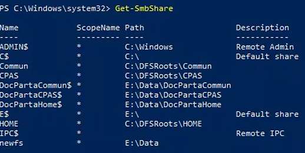
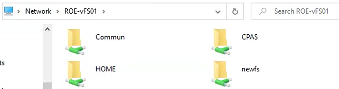

Tutorial – File Server Health Check
This check verifies that SMB shares are present and accessible on the File Server.
Incorrectly configured shares can impact:
Open PowerShell on the File Server and run:
Get-SmbShare
Verify that:

Open File Explorer and access the File Server shares:
\\ROE-vFS01
Verify that:
